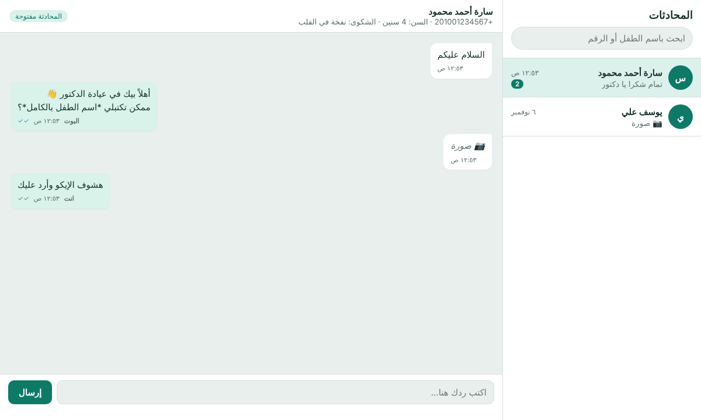

Yazied Mohammed
I build n8n automations that real people use every day: webhooks, data tables, Telegram bots, document generation and API integrations, designed around how the client already works.
Echo reports and case search for a pediatric cardiology practice
A pediatric cardiologist in Upper Egypt works alone between his clinic and nursery visits. Every case meant a Word file typed by hand, then a second formal report edited from a template, then digging through monthly folders to find an old case.
A phone form that works offline, an n8n backend that stores every case, and a Telegram bot that finds any case in plain Arabic and sends back both Word documents, written in the doctor's own clinical wording.
- The doctor types requests the way he talks: "latest 5 cases", "cases from Al-Nour nursery", "last month", or part of a name. The bot normalizes Arabic spelling and parses dates and nursery names without any paid AI.
- One smart form by heart structure (normal by default, pick only the abnormal findings with mm and mmHg values) replaces a separate template per diagnosis.
- Both documents, the short case note and the formal report with its table, are generated as real .docx files inside n8n with no external library.
- The form saves cases on the phone when there is no signal at a nursery and syncs later. The sync webhook is token protected and the bot only answers approved Telegram accounts.
- Handed over to the doctor and running in production.
Gym operations on Telegram
A new gym ran on paper: trainers walked around with a pen and notebook and the owner had no daily picture. I built a Telegram system the staff can use from their phones.
WhatsApp patient intake bot and doctor inbox
A second doctor wants every patient conversation saved and searchable per patient, an automatic first reply that collects the child's details, and a simple place to answer patients himself. I built the full system on the official WhatsApp Cloud API, n8n and Supabase (Postgres + Storage): two workflows and one database.

- Rule-based intake with no AI cost: asks for the child's name, age and complaint, validates answers, and keeps files sent mid-conversation.
- The parent can start a new case at any time by typing "new".
- All conversation state lives in one Postgres function, so it is atomic and tested on its own: welcome, short name, media instead of text, completion and restart.
- Chat list with unread counts and last message, search by child's name or phone.
- Each chat shows the intake answers at the top, who replied (bot or doctor) and delivery ticks.
- Respects WhatsApp's 24-hour rule: the reply box locks when free replies are no longer allowed.
- No extra hosting: n8n serves the page and its API.
- Meta sometimes sends the same webhook twice; duplicates are stored once and never answered twice.
- Delivery statuses only move forward (sent, delivered, read), even when Meta sends them out of order.
- Images and voice notes are downloaded within Meta's 5-minute link window into a private bucket.
- Row Level Security keeps patient data closed to public API keys; tokens live only in n8n credentials.
Status: database, bot and inbox built and tested with demo data; connecting the clinic's own WhatsApp number is the next step.